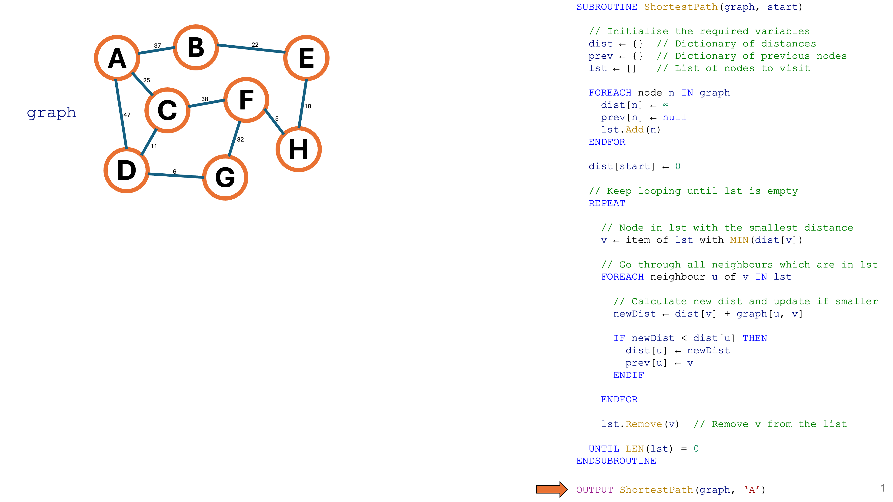
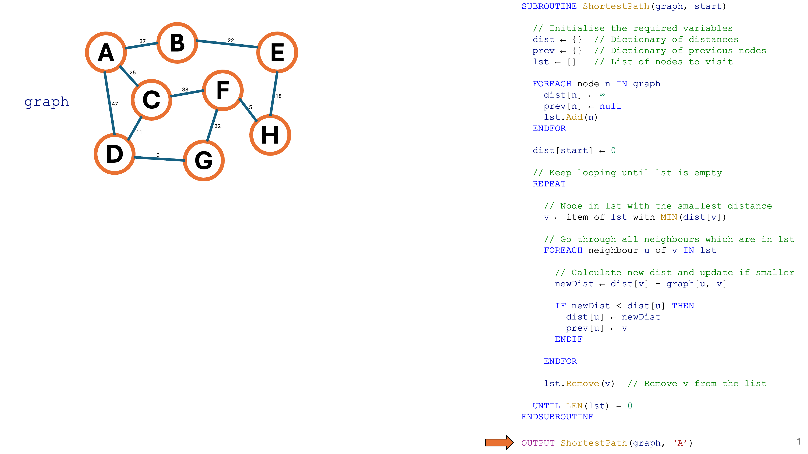

GCSE Link: None
 Dijkstra's Shortest Path Algorithm is an optimisation algorithm which finds the shortest path between a start node and any other node of a weighted graph.
Dijkstra's Shortest Path Algorithm is an optimisation algorithm which finds the shortest path between a start node and any other node of a weighted graph.
This is how it works:
A to G
is ADG, then prev['G'] will be
'D' and prev['D'] will be
'A'). Initialise all values here to null,
because we haven't discovered any paths yet.
v.
v which is still in
the list of nodes to visit. We'll call the neighbouring node u.
u: the distance of v plus the
weight of the edge between v and u.
u, update the distance
of u to be the new distance and set prev[u] to v.
v from the list of nodes to visit. If the list is not
empty, go back to step 4.
Diagram 1 shows a step-by-step animation of Dijkstra's Shortest Path Algorithm Use the arrows to navigate.
 Diagram 1
Diagram 1
 


 Can you think of a real-world application of Dijkstra's Shortest Path Algorithm?
Can you think of a real-world application of Dijkstra's Shortest Path Algorithm?
For example: finding the shortest routes between two locations in Google Maps (where edges represent roads and the weights show the travel time); network routing (nodes represent routers and weights show the latency); etc.